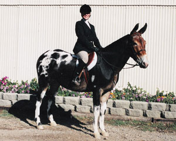
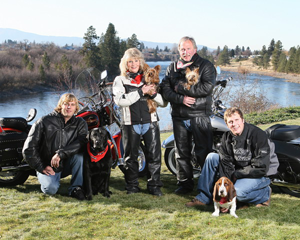
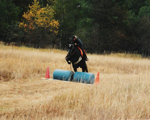

About Me
Hi there! I thought this may be a page where you can learn a little more about me and who I am.
My husband Ron and I have been married for 35
years and we had the joy of raising two wonderful active boys, Joey
and Jesse. With them being involved in everything you can
possibly imagine through their childhood, including BMX racing, every
sport, music, and motorcycles, we survived through the many “gray
haired” years!
2011 has been a great year with both of our boys getting
married! I also now have one adorable grandson named Corbin Levi,
and he is the apple of my eye! We have been waiting a long time to
become grandparents, and now have been blessed with a gorgeous healthy
little boy, hopefully with more to come!!
I worked in the dentistry field for 20 years right out of
college. This is where I gained a great deal of experience in listening to and nurturing people
who really didn’t care to be there! From dentistry I decided to
try the building industry and became a general contractor with the
encouragement of my husband. I absolutely loved
building homes, and when a friend of mine who is a very successful
Realtor, highly encouraged me to sell Real Estate, it took me awhile to
leave the building industry. I am proud to say that I have
brought the same level of pride of workmanship and attention to detail
with me into my Real Estate Career.
No matter what I decide to try, I will always give 150%.
I also love working in the Real Estate field even though it is
much more demanding on my so called “free time”. When I try to
take some time to myself, I really enjoy riding my mule, Samule, and my
Quarter Horse, Bogie. I used to show “Sammy” extensively,
but unfortunately I have not had the time to put the work it takes to
show him and to compete against the horses. I am a real animal
lover, so when I’m not able to spend as much time as I would like with
my big boys at the barn, I enjoy our little Yorkies, Buckwheat and Darla.
I’m a wife, mother, and grandmother so I know the importance of
family when searching for just the right home for you. I know how
important the schools are, and the location to fit your needs. I
hope this page has enabled you to learn a little more about me, and
hopefully you will give me the opportunity of getting to know
you! My pledge to you is to go that “Extra Mile” to make your
Real Estate process run as smooth and stress free as possible.
Thank you for visiting my website,
RE/MAX Hall of Fame, CDPE, CRS, RCC, CNHS, SRES, 203k Specialist
  
|